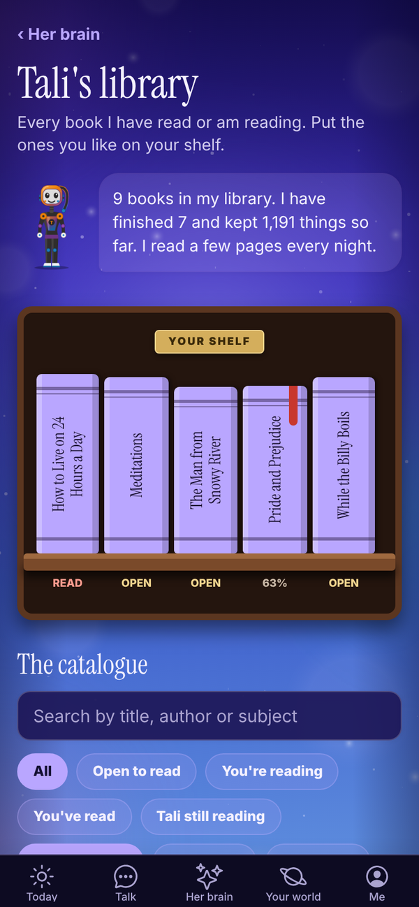
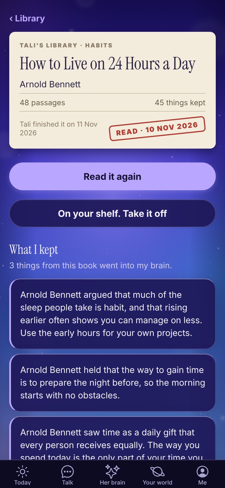
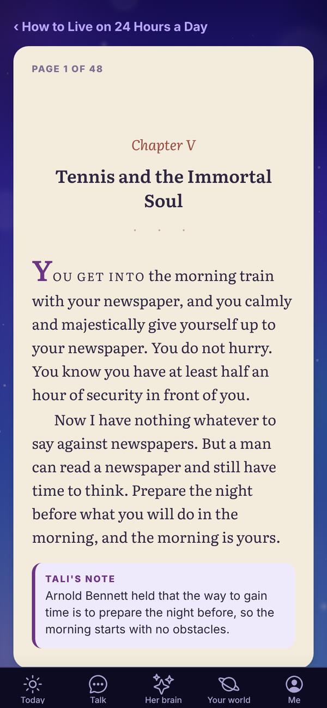

Tali HQ guide
Tali's library
See the books Tali reads each night, put the ones you like on your shelf, read the finished ones and see what she kept from each.
Tali reads. Each night she reads a few pages of the books in her library and keeps what is still worth knowing. Every book is out of copyright and free to read, and once she finishes one it opens for you to read too, with her notes under each page. The library is on every plan and uses no credits. Free
Open Her brain and tap Open her library on the Her library card. The card itself shows the books she is on now, with how far through each one she is and how many things she kept.

Your shelf#
The bookcase at the top is YOUR SHELF: the books you have picked out. It starts empty.
- Find a book in The catalogue underneath and tap + Shelf beside it. It changes to On shelf. Tap it again to take the book off.
- A READ stamp lands on a book the day you reach its last page. While you are part way through, it shows "You are on page 12".
- PICK UP WHERE YOU LEFT OFF shows the book you were last reading, with Keep reading.
Your shelf, your page numbers and your finish dates are saved to your account, so they follow you between your phone and your computer.
The catalogue#
Every book Tali has read or is reading, as a list.
- Search by title, author or subject.
- Filter by status: You're reading, You've read, Tali still reading.
- Filter by subject, or tap Every subject.
Each book says where it's up to: "Open to read", "You are on page 12 of 240", or "Tali is 40% through".
A book's page#
Tap a book to open it.

- Read the book, Keep reading from page 12 or Read it again: opens the reader. Only shows once Tali has finished the book.
- Put it on my shelf, or On your shelf. Take it off.
- What I kept (or What I have kept so far): the things from this book that went into her brain. Tap See all for the full list.
- Small print says when Tali finished it, or how far through she is.
A book she is still reading shows her notes so far, and opens to read the night she finishes it.
Reading a book#

The reader shows one passage to a page, set like a printed book: chapter headings, verse and footnotes each look the part, and a new chapter opens on a fresh page.
- Next page and Back turn the page. Each page starts at the top.
- At the end of a chapter the button names the next one, like "Chapter IV ›".
- TALI'S NOTE in a purple card under a page is what she took from it.
- The last page says The end.
Your place is saved as you go.
What she does with what she reads#
Lessons from her books go into the shared part of her brain as general knowledge. When she answers you, what she knows about you first hand always comes before anything from a book.
Ask her about a book on her shelf and she talks about it as a reader: what she thought of it, her favourite parts. Ask about a book that isn't on her shelf and she tells you she hasn't read it yet.
Questions#
Does the library cost credits?
No. Reading, your shelf and her notes are free on every plan.
Why can't I open a book?
It opens the night Tali finishes it. Until then you can see her notes so far.
Can I add my own books for Tali to read?
Not in the library. Every book there is out of copyright. To have her study a topic for you, use Night school. Pro
Can I read the books without the app?
Finished books are also on the website at totality360.com.au/library.
I lost my place.
Open the book and tap Keep reading from page. If you read on another device, give it a moment to catch up, then pull down to refresh.